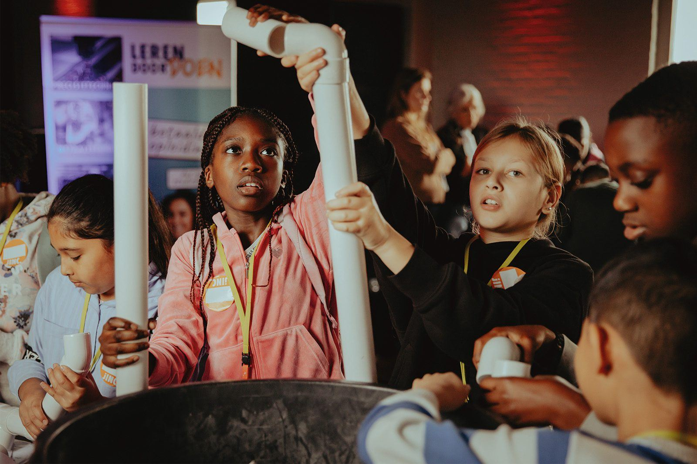
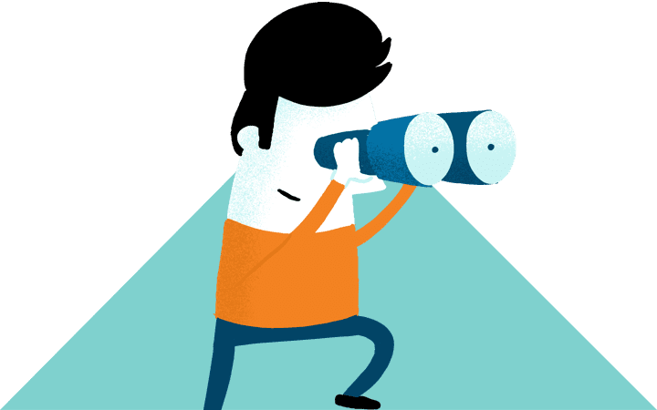
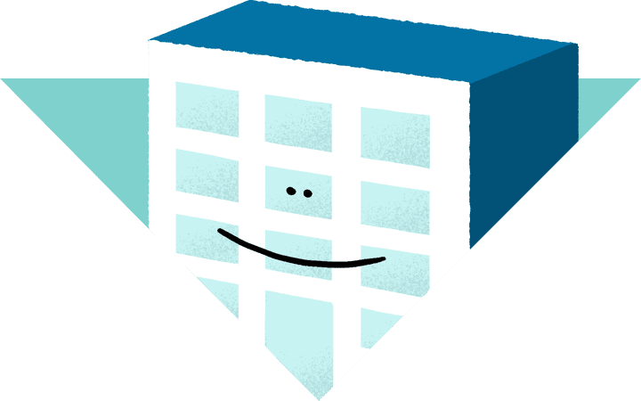
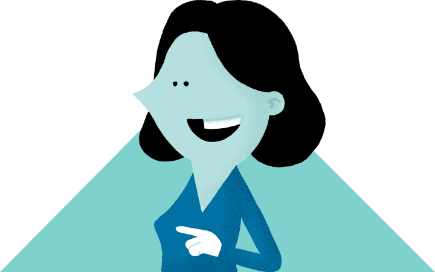
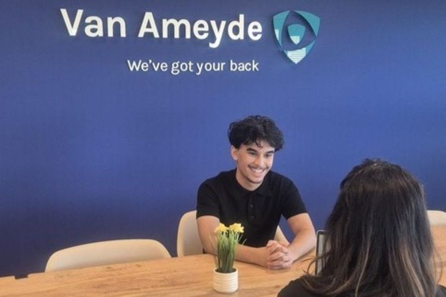
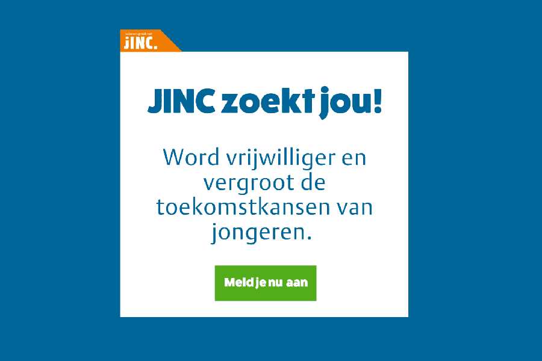
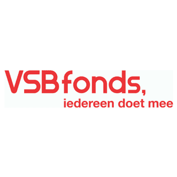

JINC helpt jongeren op weg naar werk
Ieder kind heeft talent. Daarom werkt JINC samen met bedrijven en scholen aan een samenleving waar je achtergrond niet je toekomst bepaalt.
Iedereen groeit met JINC
-

Kinderen
leren wat nodig is voor een vliegende start op de arbeidsmarkt.
-

Bedrijven
zetten maatschappelijke idealen om in de praktijk.
-

Werknemers
halen plezier en voldoening uit het delen van hun ervaring.
Nieuws
-

Landelijk
Van JINC Baas van Morgen naar Compliance Analyst
Zo'n drie jaar geleden maakte Chakir voor het eerst kennis met Van Ameyde. Hij zat toen nog op het Rijswijks Lyceum mavo en mocht voor één dag in de voetsporen treden van directielid Jan-Michiel Cillessen als JINC Baas van Morgen.
Lees meer over Van JINC Baas van Morgen naar Compliance Analyst -

Landelijk
Vrijwilligers en trainers gezocht!
Je hoeft geen ervaren trainer, coach of docent te zijn. Jouw kennis, enthousiasme en betrokkenheid zijn het belangrijkst. Samen zorgen we ervoor dat jongeren nieuwe werelden ontdekken, zelfvertrouwen opbouwen en zien welke mogelijkheden er voor hen zijn.
Lees meer over Vrijwilligers en trainers gezocht!
Blijf verbonden via de nieuwsbrief
Ja, ik wil op de hoogte blijven van JINC. Je ontvangt 10x per jaar onze nieuwsbrief met het laatste nieuws, succesverhalen en vacatures.
Onze landelijke partners en fondsen
- ASML
- BAM
- BDO
- BNP Paribas
- Coca-Cola
- Deloitte
- DHL Express
- Dioraphte
- Domino's
- Equans
- EY
